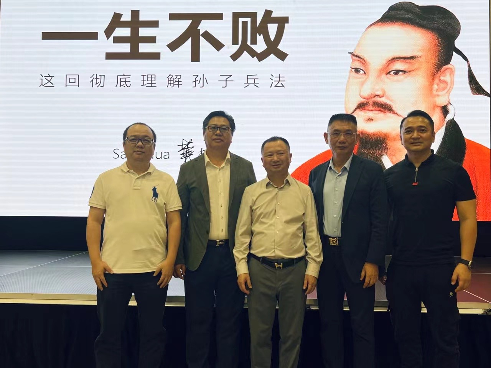
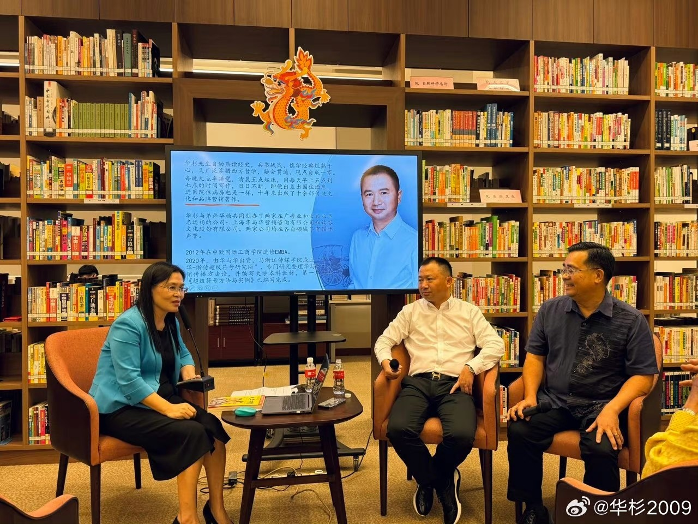
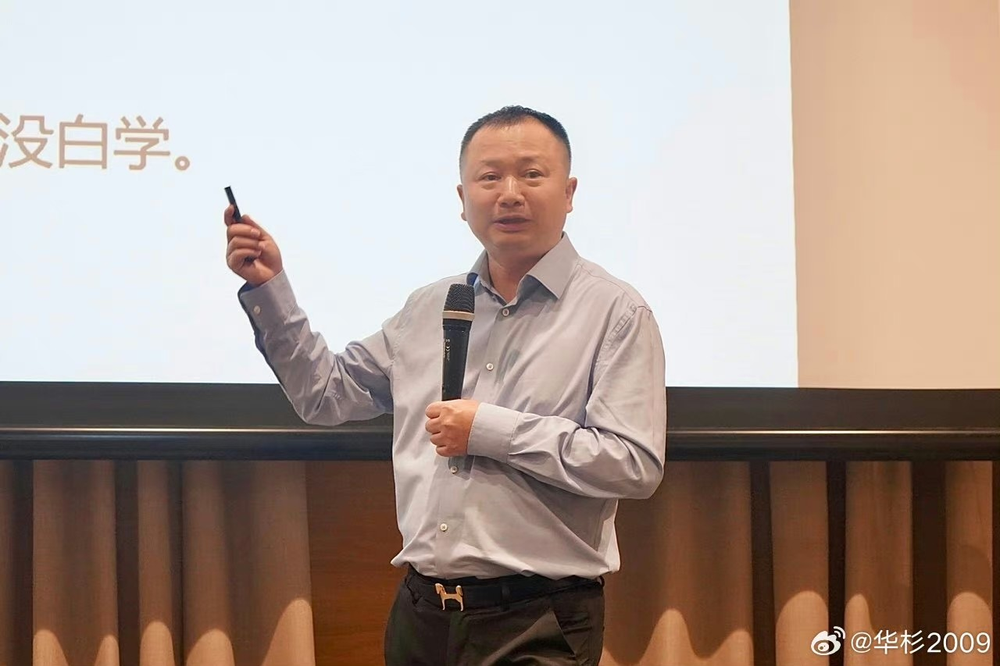
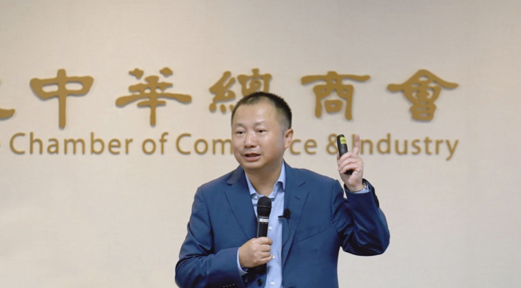
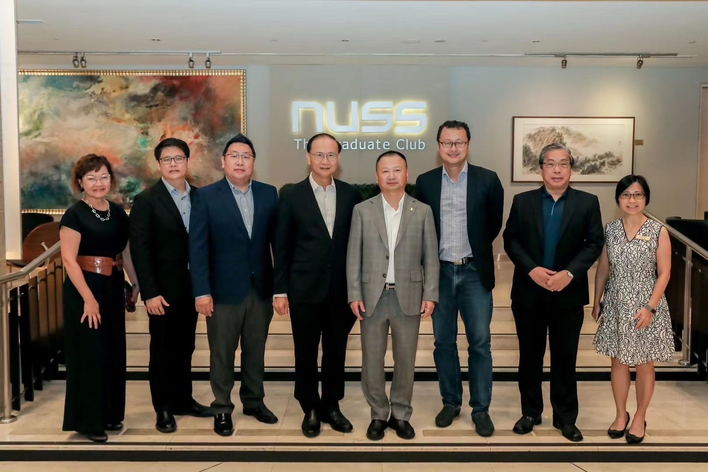
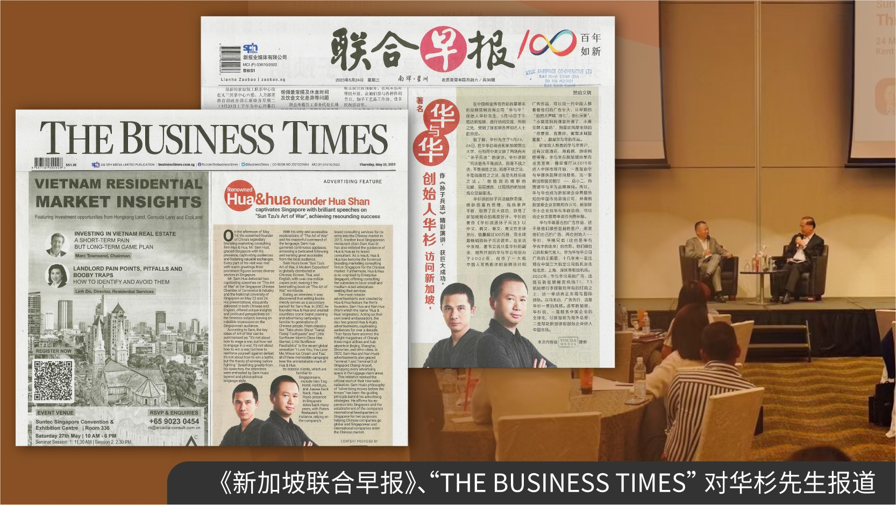

Hua & Hua
News
H&H News
Follow Hua & Hua
News
Recently news

Recently news
Sam Hua's Speech in Singapore：Understanding Sun Tzu's Art of War Completely, Never Failing in Life
On 2nd February 2024, Mr. Sam Hua was invited to participate in a lecture titled "Understanding Sun Tzu's Art of War Completely, Never Failing in Life" hosted by the Singapore-China Economic and Trade Science and Technology Cu...
Read article
Recently news
Mr. Sam Hua was invited as a guest speaker by the renowned Singaporean cultural scholar, Ms. Wang Hongyu
On 1st February 2024, Mr. Sam Hua was invited as a guest speaker by the renowned Singaporean cultural scholar, Ms. Wang Hongyu. At the Singapore Chinese Cultural Centre's sixth-floor library, they engaged in a spiritual dialog...
Read article
Recently news
Sam Hua's Speech in Singapore: How to Design Business and Life Strategies with Sun Tzu's Art of War
On 29th January, 2024, Mr. Sam Hua was invited by the DeDao-Singapore to give a speech on the topic of "How to use Sun Tzu's Art of War to design business and life strategies". More than 120 guests listened to this wonderful s...
Read article
Recently news
Mixue and the Super Sign Philosophical Model
In April 2023, The Magazine ‘The Economist ranked Mixue as the world's fifth-largest fast-food chain by outlet count, trailing behind McDonald's, Subway, Starbucks, and KFC, thus bringing this Chinese ice cream and tea brand i...
Read article
Recently news
Mr. Sam Hua was invited to give a speech at the Singapore Chamber of Commerce & Industry.
On May 23, 2023, Mr. Sam Hua was invited to give a speech on Sun Tzu's Art of War at the Singapore Chamber of Commerce & Industry.
Read article
Recently news
Mr. Sam Hua was invited to give an English speech at the National University of Singapore.
On the evening of May 24, 2023, Mr. Sam Hua presented "The Basic Logic of Art of War's 13 Chapters," fully in English, at the National University of Singapore. This time, Mr. Sam also reflected on Hua & Hua's corporate spirit...
Read article
Recently news
Singapore Lianhe Zaobao and
On the afternoon of May 18, the esteemed founder of China's legendary branding marketing consulting firm, "Hua & Hua," Mr. Sam Hua, graced Singapore with his presence, captivating audiences and fostering valuable exchanges. Ev...
Read article